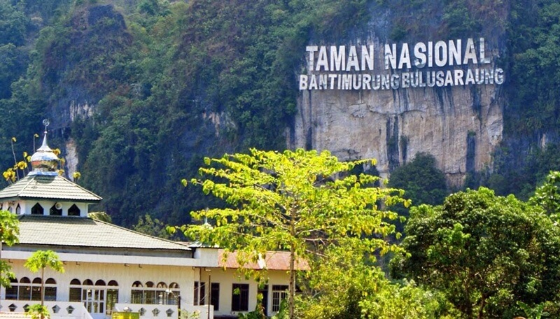

Tugas Ke-4
Nama Lengkap : Nurul Miftahul Pradani
NIM : 202055202036

Deskripsi :
Taman Nasional Bantimurung merupakan wisata Sulawesi Selatan yang sudah terkenal sampai ke luar negeri. Sebuah kawasan yang menjadi rumah nyaman bagi beberapa flora, dan fauna.
Taman Nasional Bantimurung sering disebut juga sebagai Kingdom Of Butterfly, atau kerajaan Kupu-Kupu. Karena kupu-kupu menjadi fauna khas wilayah Taman Nasional Bantimurung, bahkan di lokasi tersebut dibuat khusus museum kupu-kupu.